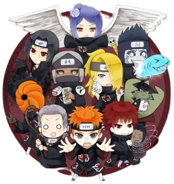
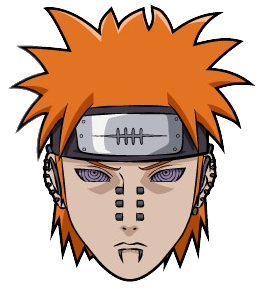
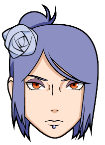

Autores dos vídeos e áudios utilizados no site
Bem-vindo ao site da Akatsuki! Aqui eu, uma grande fã de Naruto fiz esse site voltado a organização criminosa mais famosa do anime a Akatsuki, reuni os melhores vídeos e áudios que capturam perfeitamente a essência desse grupo lendário. Prepare-se para embarcar nessa jornada sombria!
Foi uma verdadeira aventura garimpar os vídeos que combinam perfeitamente com a Akatsuki e escolher cuidadosamente os áudios para representar cada membro do grupo. Tenho certeza de que você vai se surpreender com essa experiência única!
E sabe qual é a melhor parte? Abaixo, você encontrará uma lista com todos os links dos canais do YouTube de onde retirei esses vídeos e áudios incríveis. Basta clicar e conferir o trabalho desses talentosos artistas, que se dedicaram para trazer todo esse conteúdo épico.
Então, prepare-se para mergulhar de cabeça e desfrutar de tudo que a Akatsuki tem a oferecer. Aproveite cada momento e divirta-se ao máximo em meu site! Ah, e não se esqueça de explorar os links e conhecer os canais dos autores das músicas. Eles são realmente incríveis!
Links dos canais: É só clicar nas imagens para ser direcionado para o canal do YouTube!!
Página Início
Rap da Akatsuki 
O vídeo utilizado de fundo na página inicial para criar uma atmosfera única é o "Rap da Akatsuki (Naruto) - OS NINJAS MAIS PROCURADOS DO MUNDO | NERD HITS" produzido pelo canal 7 Minutoz.
Página Ninjas
Pain 
O áudio utilizado é o "Rap do Nagato / Pain (Naruto) - SHINRA TENSEI | NERD HITS" produzido pelo canal 7 Minutoz.
Konan 
O áudio utilizado é o "ANJO DE PAPEL - Rap da Konan ( NARUTO ) | FELÍCIA ROCK [Prod. Sidney Scaccio]" produzido pelo canal Felícia Rock.
Zetsu
O áudio utilizado é o "VMZ - Eu Sou Zetsu" produzido pelo canal VMZ.
Hidan
O áudio utilizado é o "Rap do Hidan (Naruto) - VAI COMEÇAR O RITUAL | NERD HITS" produzido pelo canal 7 Minutoz.
Itachi
O áudio utilizado é o "Rap do Itachi (Naruto) - ESSA DOR QUE CAUSEI... | NERD HITS" produzido pelo canal 7 Minutoz.
Kakuzu
O áudio utilizado é o "Rap do Kakuzu (Naruto) - ACHOU QUE EU TINHA MORRIDO | NERD HITS" produzido pelo canal 7 Minutoz.
Tobi
O áudio utilizado é o "Rap do Obito (Naruto) - MAIS NINGUÉM VAI SOFRER O QUE EU SOFRI | NERD HITS" produzido pelo canal 7 Minutoz.
Sasori
O áudio utilizado é o "♫ SASORI RAP - | "Marionete Humana" | Flash Beats (Naruto) (Prod. WB Beats)" produzido pelo canal Flash Beats.
Orochimaru
O áudio utilizado é o "Rap do Orochimaru (Naruto) - EU VOU VIVER PRA SEMPRE | NERD HITS" produzido pelo canal 7 Minutoz.
Deidara
O áudio utilizado é o "Rap do Deidara (Naruto) - A ARTE É A EXPLOSÃO | NERD HITS" produzido pelo canal 7 Minutoz.
Kisame

O áudio utilizado é o "Rap do Kisame (Naruto) - UMA BIJUU SEM CAUDA | NERD HITS" produzido pelo canal 7 Minutoz.